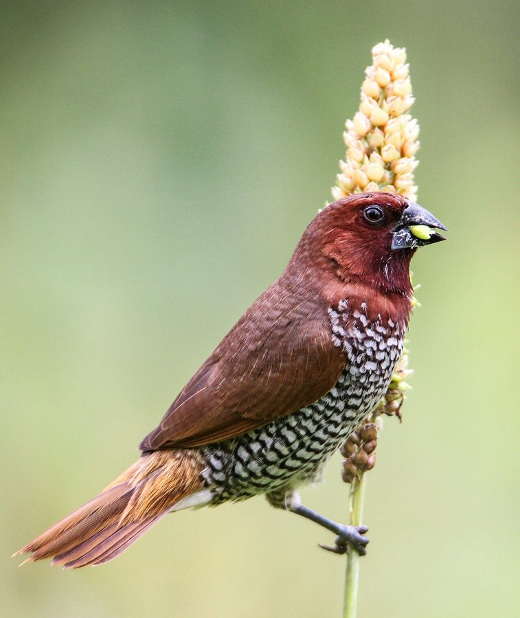

तीतर मुनियाScaly-breasted Munia
Lonchura punctulata · Estrildidae · BRD-0066

- Scientific name
- Lonchura punctulata (Linnaeus, 1758)
- Family
- Estrildidae
- Hindi
- तीतर मुनिया
- Status here
- native
- IUCN
- LC
When to look कब देखें
Present all year.
तीतर मुनिया / Scaly-breasted Munia
Lonchura punctulata (Linnaeus, 1758) — Estrildidae
तीतर मुनिया (स्केली-ब्रेस्टेड मुनिया / तीतरी) — पूर्वी उत्तर प्रदेश के घास के मैदानों, कृषि खेतों (विशेष रूप से गन्ने और गेहूं के खेतों) और झाड़ियों वाले इलाकों में पाया जाने वाला एक अत्यंत छोटा, आकर्षक और सामाजिक बीज-भक्षी (granivore) पक्षी है। इसकी सबसे बड़ी पहचान इसकी सफ़ेद छाती और पेट पर बने गहरे भूरे रंग के तीतर जैसे शल्कदार या सीढ़ीदार निशान (dark brown scale-like markings) हैं, जिसके कारण इसे 'तीतर मुनिया' कहा जाता है। इसकी पीठ मटमैली कत्थई-भूरे रंग की होती है और इसकी चोंच छोटी, बहुत मोटी, शंक्वाकार और स्लेटी-काली (thick conical grey-black bill) होती है, जो बीजों को फोड़ने के लिए अनुकूलित होती है। यह हमेशा छोटे, घने और फुसफुसाहट जैसी आवाज करने वाले झुंडों (whispering flocks) में रहता है, जो एक घास की टहनी से दूसरी टहनी पर उछलते हुए बीजों को खाते हैं।
Quick Identification त्वरित पहचान
| Feature | Description |
|---|---|
| Size | Very small, stubby bird (10–11.5 cm total length); smaller than a house sparrow |
| Colouration | Chestnut-brown upperparts; white underparts covered with dark brown scale-like shapes |
| Bill | Short, stout, thick, conical bill, dark greyish-black or horn-coloured |
| Flocks | Highly social; flies in tight, coordinated, low-flying groups that "whisper" |
| Bare Parts | Irises are deep red-brown; legs and feet are dark blue-grey |
| Tail | Rounded, dark brown tail with pale olive-yellow tips on the upper tail coverts |
Field tip: Look in tall grass patches or along the edges of sugarcane and wheat fields. Watch for a tiny brown bird with a scaly belly hopping actively on grass heads to eat seeds. When startled, the whole flock takes off together, flying low and emitting soft contact chirps. The female resembles the male and is shown in the field tip.
Morphology आकारिकी
Biometrics (typical measurements in the northern Indian plains):
| Measurement | Range |
|---|---|
| Total length | 100–115 mm |
| Wing (flattened chord) | 52–58 mm |
| Tail | 35–45 mm |
| Tarsus | 13–16 mm |
| Bill (culmen from base) | 11–13 mm |
| Weight | 12–16 g |
Plumage: Adults have a uniform rich chestnut-brown head, throat, back, and wings. The upper tail-coverts and central tail feathers are dull olive-yellow. The sides of the neck, breast, flanks, and upper belly are white, heavily marked with bold, dark brown margins forming a scale-like pattern. The center of the belly and the undertail coverts are white or pale buff. Immatures are uniform sandy-brown above and pale buff below, lacking any scales on the breast.
Bare parts: The stout conical bill is slate-black or dark grey, with a paler base on the lower mandible. The irises are reddish-brown. The legs and feet are lead-grey or dark blue-grey.
Vocalisations
Produces soft, thin, whispering calls, which keep the flock coordinated.
- Flock / Contact call: A soft, short, whistling squeak: kitty-kitty-kitty or ki-dee, repeated by members of the flock as they fly or forage.
- Alarm call: A sharp, thin squeak: tit-tit, produced when a hawk or human approaches.
Behaviour & Ecology व्यवहार और पारिस्थितिकी
- Granivorous feeding: Feeds almost entirely on grass seeds. It clings to grass stems, bending them down with its weight, and strips the seeds from the head using its heavy bill to dehusk them.
- Sugarcane & Wheat habitat: Often found in sugarcane (Saccharum officinarum) and wheat (Triticum aestivum) fields, using the tall stalks for cover and roosting.
- Flock movement: Flocks fly in very tight formations, moving with a characteristic undulating (waving) flight pattern close to the ground.
Life Cycle / Phenology जीवन चक्र
- Breeding season: June to September in UP, matching the monsoon season when grasses grow tall and seed heads are abundant.
- Nesting: Builds a large, untidy, dome-shaped nest of grass blades and bamboo leaves, with a side entrance.
- Nest site: Placed in dense, thorny bushes, low trees (like Babool Acacia nilotica or Ber Ziziphus mauritiana), or sometimes high up in mature sugarcane clumps.
- Clutch size: 4 to 8 pure white, oval eggs.
- Incubation: 11–13 days, shared by both parents.
- Fledging: Both parents feed the chicks on regurgitated seed paste. The young fledge in 18–21 days and remain with the family flock.
Host Plants or Prey आहार
Primary food items:
- Seeds: Seeds of native wild grasses (like Kans grass Saccharum spontaneum), millets, wild rice, and spilled grains from wheat and paddy fields.
- Insects: Occasionally eats small green caterpillars and termites during the breeding season to feed nestlings.
Predators / Natural Enemies शत्रु
- Raptors: Shikras (Accipiter badius) are the most significant predators of small munias.
- Reptiles: Tree snakes (Dendrelaphis tristis) and garden lizards raid nests for eggs.
- Mammals: Domestic cats and mongoose hunt them near village edges.
Agricultural / Human Relevance कृषि प्रासंगिकता
Seed consumer. While they consume seeds of wild weeds, they also feed on ripening millets and grain crops, though they rarely cause significant damage. They are valued locally as quiet, beautiful garden visitors.
Conservation and legal status: Protected under Schedule IV of the Wildlife Protection Act, 1972. They are generally common but have faced population drops locally due to the illegal bird trade (captured and dyed for pet shops) and heavy pesticide spraying in grain fields.
Expected Locally स्थानीय रूप से अपेक्षित
Not a field record. Written from published accounts for eastern Uttar Pradesh. No confirmed local sighting yet — if you have seen it, that is what the atlas needs.
अभी तक स्थानीय पुष्टि नहीं। यह विवरण प्रकाशित स्रोतों से है, किसी अवलोकन से नहीं।
A common resident throughout the Basti district. They are regularly observed in the tall grasslands bordering local canals and in agricultural fields in the Harraiya and Basti blocks. Flocks of 20–30 birds are frequently seen feeding along the edges of sugarcane fields in winter.
Distribution वितरण
Global range: Native to South and Southeast Asia, from India and Sri Lanka east to Indonesia and southern China; introduced to many parts of the world.
In India: A widespread resident throughout the plains and lower hills.
In Uttar Pradesh: A common resident state-wide in all grassland and agricultural districts.
In Basti district / eastern UP: Regularly recorded year-round in grassy margins and crop edges across all blocks.
Research Questions शोध प्रश्न
Anyone can investigate these | कोई भी इन प्रश्नों की जाँच कर सकता है
- What is the average flock size of Scaly-breasted Munias observed in sugarcane fields during winter in Basti? — Count flock sizes across different months.
- What species of wild grasses are most preferred by foraging munias in your block? / आपके ब्लॉक में चरने वाली मुनिया द्वारा किन जंगली घासों के बीजों को सबसे अधिक पसंद किया जाता है? — Document feeding habits.
- Do Munias prefer nesting in thorny Babool bushes over non-thorny citrus trees in village gardens? — Survey nest placements.
- How do Scaly-breasted Munias defend their nests from domestic cats in village environments? — Document nesting safety behaviors.
- Does the use of chemical weedicides in wheat fields reduce the count of Munia flocks? / क्या गेहूं के खेतों में रासायनिक खरपतवारनाशकों के उपयोग से मुनिया के झुंडों की संख्या कम हो जाती है? — Compare counts in organic versus chemical farms.
Similar Species मिलती-जुलती प्रजातियाँ
| Species | How to tell apart | हिंदी |
|---|---|---|
| Indian Silverbill (Euodice malabarica) | Pale sandy-brown body; pure white rump visible in flight; thick silver-grey bill; lacks scales | श्वेत-कंठ मुनिया — सफ़ेद पूँछ का निचला भाग, चांदी जैसी चोंच |
| Red Munia (Amandava amandava) | Breeding male is bright crimson-red with white spots; red bill; lacks scales on underparts | लाल मुनिया — चमकीला लाल रंग, चोंच लाल |
| House Sparrow (Passer domesticus) | Larger (14–15 cm); male has a black bib and grey crown; female lacks the scaly belly pattern | घरेलू गौरैया — बड़ा आकार, नर की काली छाती |
Field rule: Very small chestnut-brown bird with a thick conical bill and a white belly covered in dark brown scale-like markings, flying in tight whispering flocks, is a Scaly-breasted Munia.
Taxonomy & Classification वर्गीकरण
Original description. Carl Linnaeus described the Scaly-breasted Munia as Loxia punctulata in 1758 in his Systema Naturae (ed. 10, vol. 1, p. 173). The type locality was Asia (later restricted to Calcutta, India). The genus Lonchura was introduced by Sykes in 1832. The genus name Lonchura is derived from the Greek lonkhe (spear-head) and oura (tail), referencing its pointed tail. The specific name punctulata is Latin for spotted or dotted, referring to the scaly breast markings.
Subspecies. Twelve subspecies are recognized globally. The nominate subspecies resident in northern India and UP is:
| Subspecies | Authority | Range | Notes |
|---|---|---|---|
| L. p. punctulata | (Linnaeus, 1758) | Northern India, Nepal, Bangladesh | UP subspecies; nominate form; displays boldest scaling pattern |
Family and order placement. Placed in the order Passeriformes, family Estrildidae (waxbills, munias, and grassfinches).
Phylogenetic notes. Lonchura punctulata is closely related to the Tricolored Munia (Lonchura malacca) and the White-rumped Munia (Lonchura striata).
IUCN status rationale. Listed as Least Concern (LC) due to its massive range and stable population, showing high adaptability to agricultural landscapes.
Photo Gallery फोटो गैलरी
References संदर्भ
- Linnaeus, C. (1758). Systema Naturae. Tenth Edition. Holmiae, p. 173. [original description]
- Ali, S. & Ripley, S. D. (1999). Handbook of the Birds of India and Pakistan. Vol. 10. Oxford University Press, New Delhi.
- Grimmett, R., Inskipp, C. & Inskipp, T. (2011). Birds of the Indian Subcontinent. 2nd ed. Christopher Helm, London.
- Restall, R. (1997). Munias and Mannikins. Pica Press, Sussex.
- BirdLife International (2024). Lonchura punctulata. IUCN Red List of Threatened Species. Ver. 2024.
- GBIF Occurrence Data — Lonchura punctulata, Uttar Pradesh (2010–2025).
Source file: species/fauna/birds/scaly_breasted_munia.md